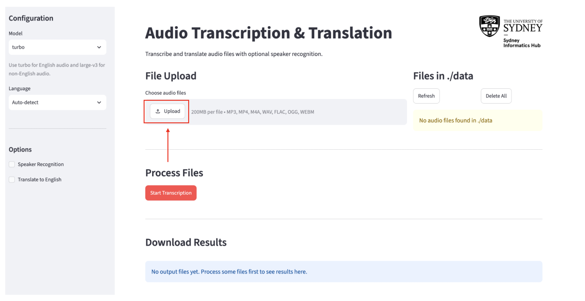
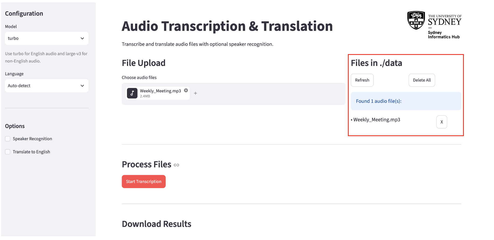
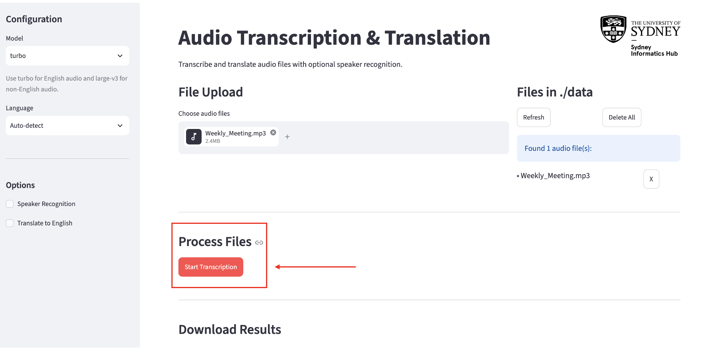
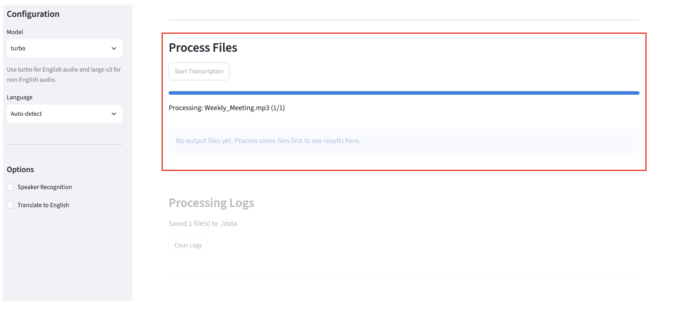
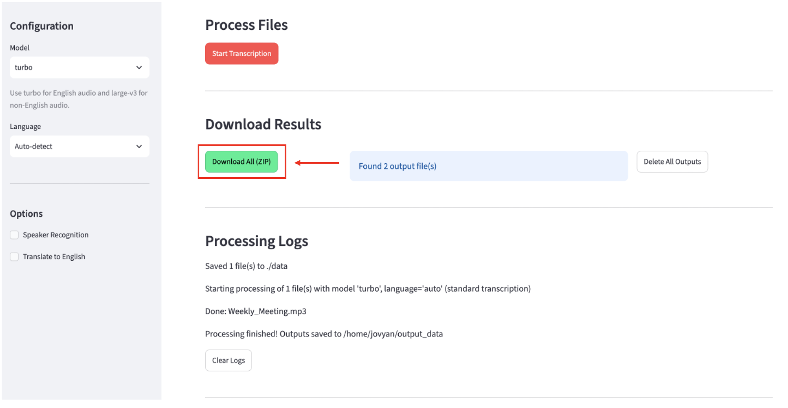
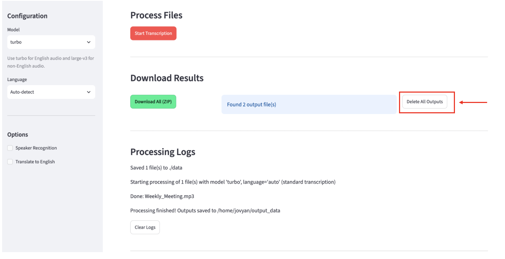
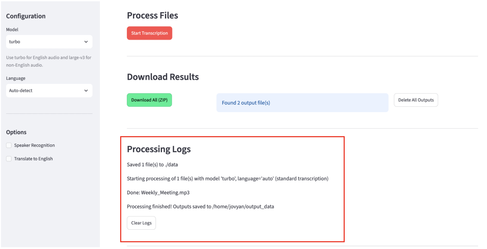
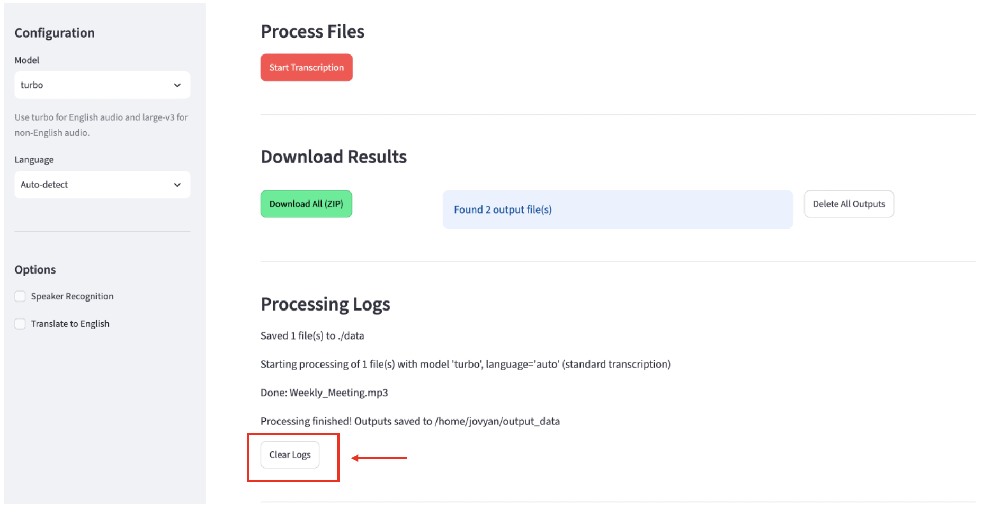

Audio Transcription & Translation — User Guide
Overview
This app transcribes and optionally translates audio files. You configure your settings in the sidebar on the left, upload your files, run processing, then download the results.
Step 2: Upload Your Audio Files
Supported formats: MP3, MP4, M4A, WAV, FLAC, OGG, WEBM
In the File Upload section, click Upload.

browse You can select multiple files at once.
The Files in ./data panel on the right shows everything currently queued for processing. From here you can:

- Click Refresh to update the list.
- Click X next to a file to remove it individually.
- Click Delete All to clear every file in the queue.
Step 3: Run Transcription
Once your files are uploaded and your settings are configured, click the Start Transcription button.

- A progress bar and status message will appear showing which file is being processed and how many remain.
- Logs appear at the bottom of the page in real time.
- Processing time depends on file length, the model chosen, and whether speaker recognition is enabled.

Do not change settings or navigate away while processing is running.
Step 4: Download Results
When processing finishes, the Download Results section shows your output files.
- Download All (ZIP) — downloads a
transcriptions.ziparchive containing your results:.srtand.txtfiles for your output- if translation was used, the transcription in the original language as well as the translated English file
- a
reference.txtfile with a research blurb and methodology

- Click Delete All Outputs to remove all output files.

Processing Logs
The Processing Logs section at the bottom records what happened during each run — which files were processed, any errors, and when processing completed.

Click Clear Logs to reset the log view.

Quick Reference
| Goal | Settings |
|---|---|
| Transcribe English audio, fast | Model: turbo, Language: English |
| Transcribe non-English audio | Model: large-v3, Language: select yours |
| Identify speakers in a recording | Enable Speaker Recognition; set number of speakers if known |
| Get an English translation of foreign audio | Enable Translate to English |
| Transcribed translation with speaker labels | Enable both Speaker Recognition and Translate to English |